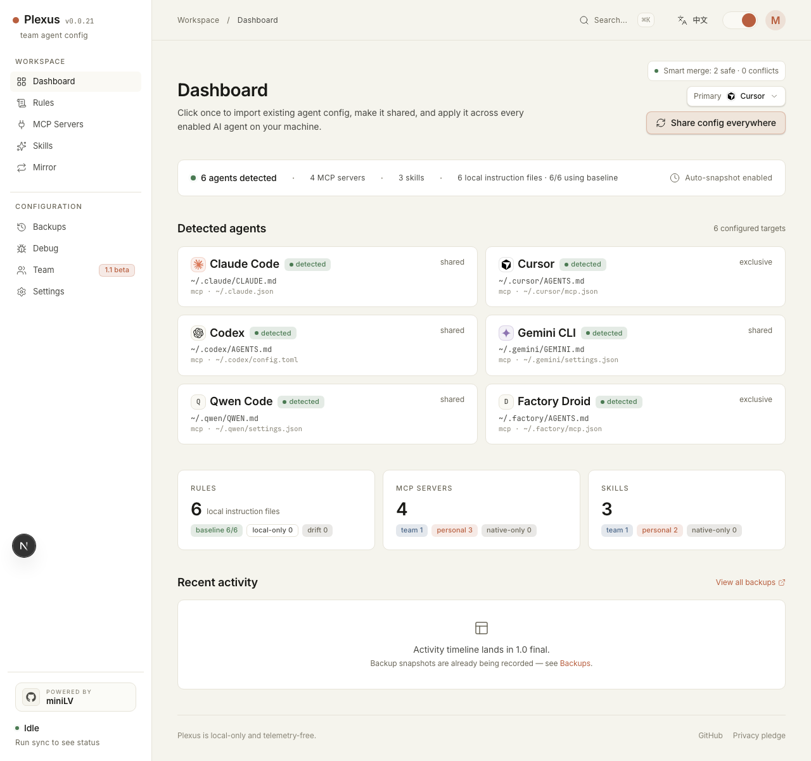

Claude Code, Cursor, and Codex each expect different native files. Claude Code reads
CLAUDE.md and ~/.claude.json. Cursor has
AGENTS.md, ~/.cursor/mcp.json, and its commands directory.
Codex uses AGENTS.md, config.toml, and a separate skills
directory. Once you add one useful MCP server or one strong instruction file, config
drift starts immediately.
Why config drift gets annoying so quickly
- You update one rule in Claude Code and forget the Codex copy.
- You add an MCP server in Cursor and now three tools disagree.
- You want to share skills across tools, but each one stores them differently.
- Some native files also contain auth, history, or profile data, so replacing the whole file is risky.
The hard part is keeping native tools in sync without breaking the parts of those files that the tools manage themselves.
A safer sync model
The practical approach is to keep one local source of truth, then project that config back into each tool's native format. For AI coding tools, that usually means:
- one baseline for rules
- one canonical MCP server list
- one shared skills store
- backups before every native write
- partial writes for shared native config files
That is the model Plexus uses. It imports the config you already have, lets you choose a
primary source when multiple agents disagree, stores the canonical copy under
~/.config/plexus/, and writes back into Claude Code, Cursor, and Codex in
their own expected shapes.

What Plexus preserves
- It does not run MCP servers.
- It snapshots native files before writes.
- It partial-writes shared files instead of replacing them wholesale.
- It keeps the canonical store local and telemetry-free.
Quick start
npx -y plexus-agent-config@latest startThen open the local dashboard, import the agents already on your machine, choose the primary config when there is a conflict, and preview the result before syncing.
When this is a better fit than dotfiles
Dotfiles are great when every target file is fully yours. Plexus is aimed at the messier case: multiple AI tools, mixed file formats, and native config files that contain data you should not overwrite just to keep MCP servers and instruction files aligned.